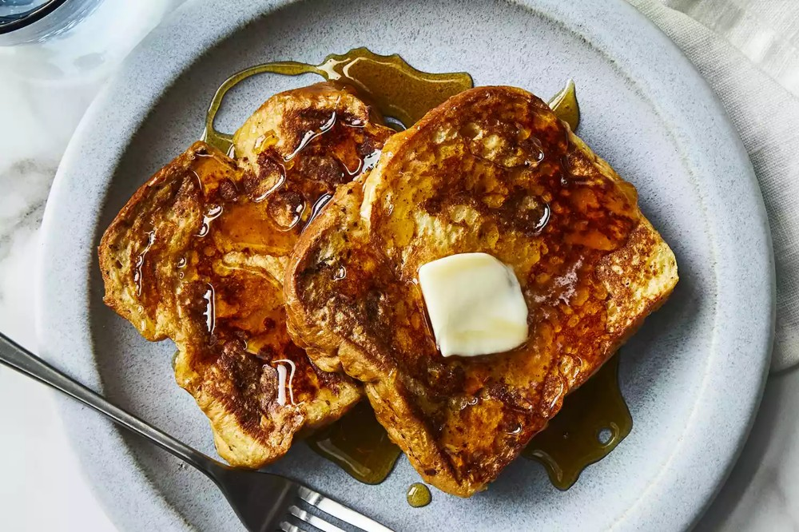

French Toast
What you need to make french toast
- 6 thick slices of bread
- 2 eggs
- Custard
- ⅔ cup whole milk or half-and-half
- 1 pinch of salt
- 1 teaspoon vanilla extract (optional)
- ¼ teaspoon ground cinnamon (optional)
- Butter
- Pan or Griddle
- Maple Syrup
Description
Indulge in the classic delight of French Toast. This timeless breakfast treat features thick slices of bread soaked in a rich custard mixture of eggs, milk, and a touch of vanilla. Served golden brown, French Toast is the perfect combination of crispy on the outside and soft and fluffy on the inside. Enjoy it with a drizzle of maple syrup or your favorite fruit toppings for a delightful morning meal that will satisfy your taste buds and start your day off right.
How to make French Toast
- Prepare the custard. Whisk together the eggs, milk, and flavorings until completely blended. Use a large bowl wide enough to dip the bread in. You can also pour the whipped custard into a baking dish for easy dipping.
- Heat a pan or griddle over medium heat. You want it to be hot enough to form a crust when the custard-coated bread hits the pan, but not so hot that the crust burns before the custard that's soaked into the bread has a chance to cook.
- Dip the bread in the custard, turning it to coat completely on both sides. The dryer or sturdier your bread, the longer it can soak. Melt 1 or 2 tablespoons butter in the hot skillet. Depending on how large your skillet is, place one or two slices in the hot butter. Cook until golden brown, then turn over to cook on the other side. You can keep the slices warm on a rack in a 350º F oven until the rest of the toast is cooked.